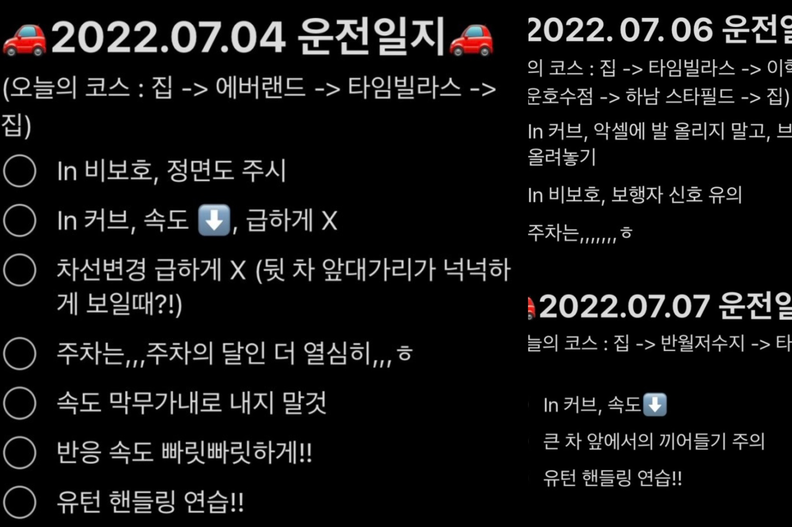

4. 드라이브
: 제 기억이 맞다면, 저는 초등학생 때부터 갖고 있던 버킷리스트 중 하나가 운전면허를 취득할 수 있는 나이가 되면 바로 면허를 취득하는 것이었습니다.
실제로 그 꿈을 이루게 되었는데,, 운전이 저한텐 호락호락 하지 않더라구요,,???ㅎㅎ 공간지각 능력이 부족한건지,,
무려 3년동안 면허증을 장롱에 묻어둔 채 지내다가 동생의 도움을 받아 연수를 했고, 이제 나름 마실 왔다갔다 할 수 있는 정도의 실력은 되었습니다.ㅎㅎ
많이는 아니지만, 약간의 자신감이 붙은 이후로 대중교통보다는 차를 교통수단으로 많이 이동하게 되면서부터 드라이브를 취미 생활로도 즐기게 된 것 같습니다!

위의 운전일지는 바야흐로 제가 동생한테 한창 연수받을 때 쓰던 것 입니다 ㅎㅎ 나름 우등생이려고 노력했답니다